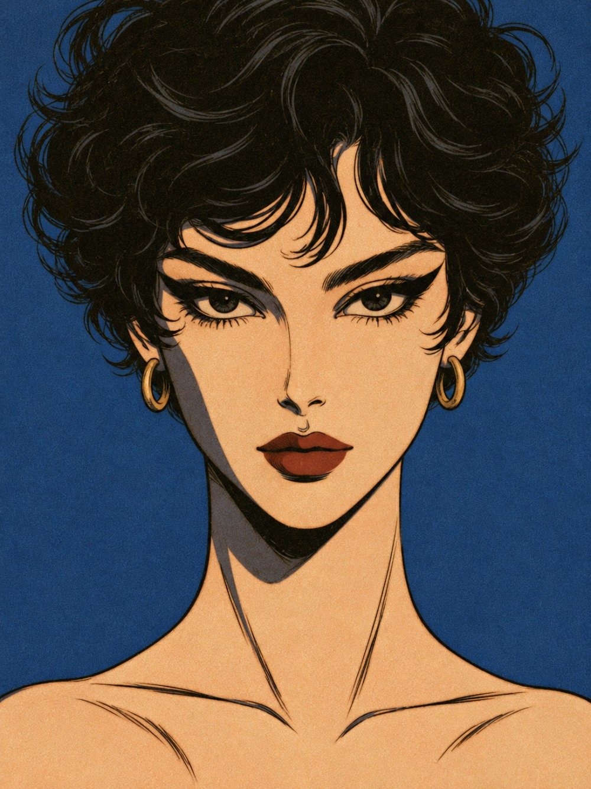
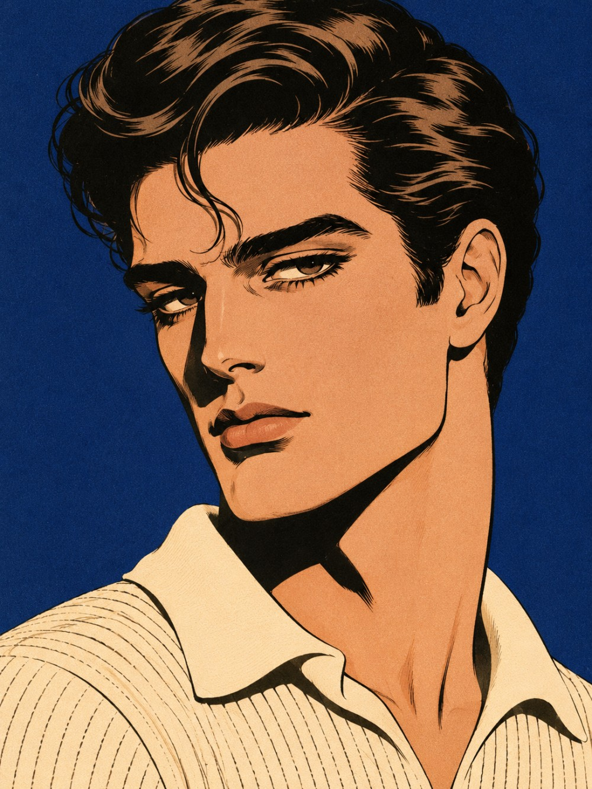
Cinque anni dopo,로마
네 번째 출장지는 1953년의 로마다. 이번 호도 모델은 새 얼굴이다. 짧게 잘라 헝클어뜨린 검은 곱슬머리의 여자, 이마로 컬 한 가닥을 떨어뜨린 남자.
전쟁이 끝난 지 8년. 테베레강 남쪽 치네치타 촬영소에 미국 영화가 몰려왔고, 그해 여름 「로마의 휴일」이 개봉했다. 한 해 전 피렌체의 흰 방에서는 이탈리아 디자이너들이 미국 바이어 앞에 줄지어 섰다.
여자들은 납작한 샌들과 발목 위에서 끝나는 바지를 입었다. 남자들은 어깨 심지를 빼고 바지통을 좁혔다. 스쿠터와 에스프레소, 끈 없는 로퍼가 그 옆에 있었다.
파리가 옷을 지었다면,
로마는 옷을 입고 거리로 나갔다.
— ÉPOQUE 편집부, 1985년 서울
여성 룩 다섯 벌 — 스페인 계단에서 베네토 거리까지
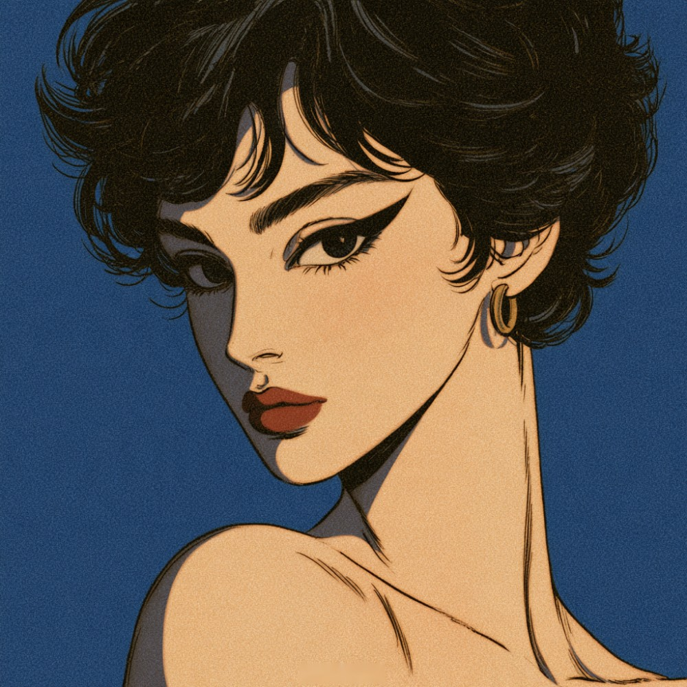
이탈리안 컷
- HAIR
- 짧게 잘라 손으로 헝클어뜨린 검은 곱슬, 이탈리안 컷
- EYES
- 눈꼬리 밖으로 길게 뺀 검은 아이라인
- BROWS
- 숱을 살려 굵게 그린 눈썹
- LIPS
- 윤곽을 또렷하게 잡은 매트 레드
- EARRINGS
- 작은 금 링 귀걸이
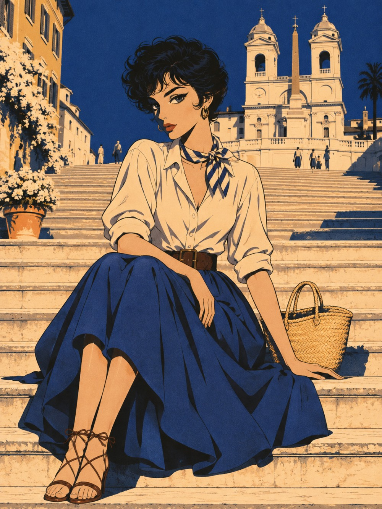
계단에 앉은 공주
1953년 8월 27일, 영화 「로마의 휴일」이 개봉했다. 궁을 빠져나온 공주는 머리를 짧게 자르고 스페인 계단에 앉아 젤라토를 먹는다.
의상을 맡은 이디스 헤드는 공주를 평범한 아가씨로 바꾸려고 소매를 걷은 민무늬 블라우스, 주름을 잡은 면 치마, 납작한 신발을 골랐다. 목에 작은 스카프를 묶으면 그해 여름의 차림이 된다.
- BLOUSE
- 소매를 걷어 올린 크림 면 블라우스
- SKIRT
- 종아리 길이의 코발트 면 풀 스커트, 넓은 가죽 벨트
- SCARF
- 목에 묶은 줄무늬 실크 스카프
- SHOES · BAG
- 발목을 묶는 가죽 끈 샌들, 밀짚 바구니 가방
콘도티 거리의 오후
스페인 계단에서 곧게 뻗은 비아 콘도티는 로마 양장점과 가죽 공방이 모인 거리다. 1950년대 로마의 맞춤복 ‘알타 모다’는 파리보다 선이 단순하고 몸을 덜 조였다.
허리선이 살짝 들어간 짧은 재킷에 종아리 길이의 좁은 치마. 손에는 대나무를 불에 구부려 손잡이로 단 가방을 들었다. 전쟁 직후 가죽이 모자라던 피렌체에서 나온 발상이다.
- SUIT
- 칠부 소매의 짧은 재킷과 펜슬 스커트, 크림 울
- HAT · GLOVES
- 작은 검은 모자, 짧은 흰 장갑
- BAG
- 대나무 손잡이의 검은 가죽 핸드백
- SHOES
- 검은 슬링백 힐
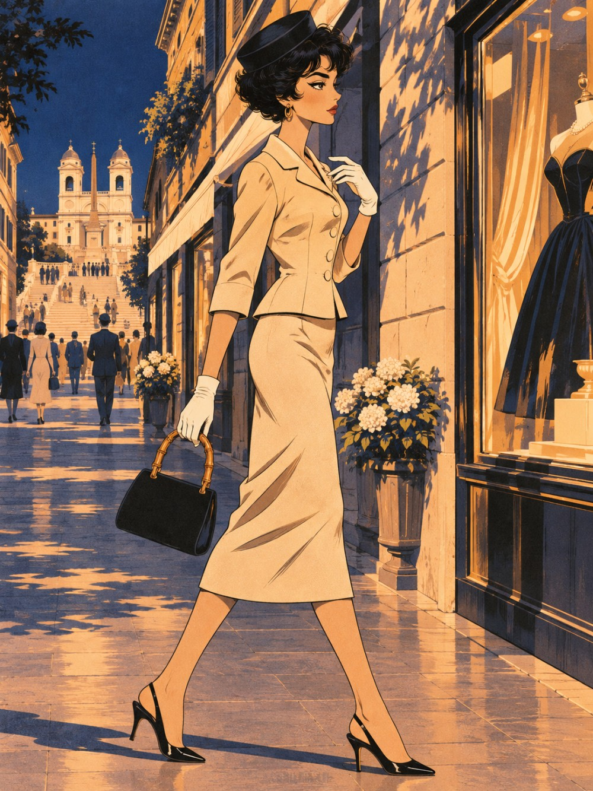
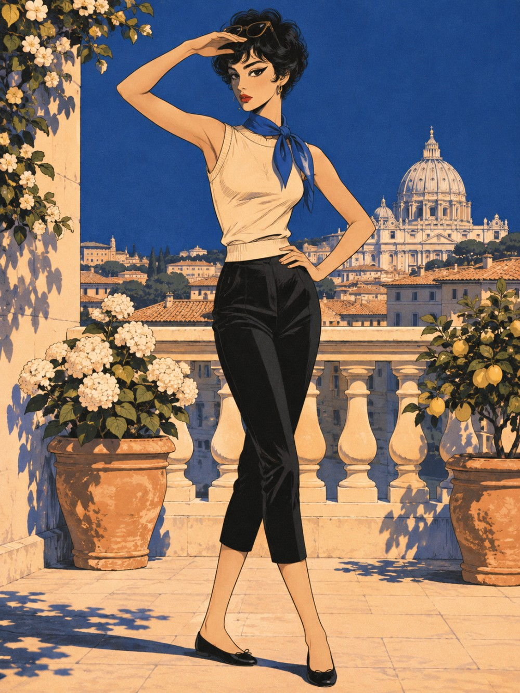
발목 위에서 끝나는 바지
종아리 아래, 발목 위에서 끝나는 좁은 바지에는 나폴리 앞바다의 섬 이름이 붙었다. 휴양지에서 입던 이 바지는 1950년대 초 로마와 피렌체의 부티크를 거쳐 도시로 올라왔다.
소매 없는 보트넥 니트, 목에 묶은 코발트 스카프, 납작한 발레 플랫. 치마를 벗어도 우아할 수 있다는 것을 이탈리아 스포츠웨어가 먼저 보여 줬다.
- PANTS
- 발목 위 길이의 검은 카프리 팬츠
- TOP
- 소매 없는 크림 보트넥 니트
- SCARF
- 목에 묶은 코발트 실크 스카프
- SHOES
- 검은 발레 플랫
하얀 방의 여름
1952년 7월 22일, 피렌체 피티궁의 살라 비앙카에서 이탈리아 패션쇼가 열렸다. 수출상 조반니 바티스타 조르지니가 미국 바이어와 기자들을 불러 모은 자리였다. 흰 스투코 벽과 샹들리에 아래를 걸은 이 쇼를 흔히 이탈리아 패션의 출발점으로 꼽는다.
뼈대를 넣은 새틴 보디스, 바닥까지 부푼 치마, 허리에 두른 코발트 새시. 파리의 볼가운과 같은 문법이지만 장식을 덜고 천의 광택으로 승부했다.
- GOWN
- 크림 새틴 스트랩리스 볼가운
- SASH
- 허리에서 길게 늘어뜨린 코발트 실크 새시
- GLOVES
- 오페라 길이의 흰 장갑
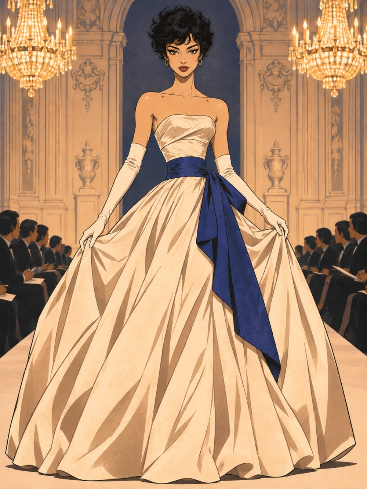
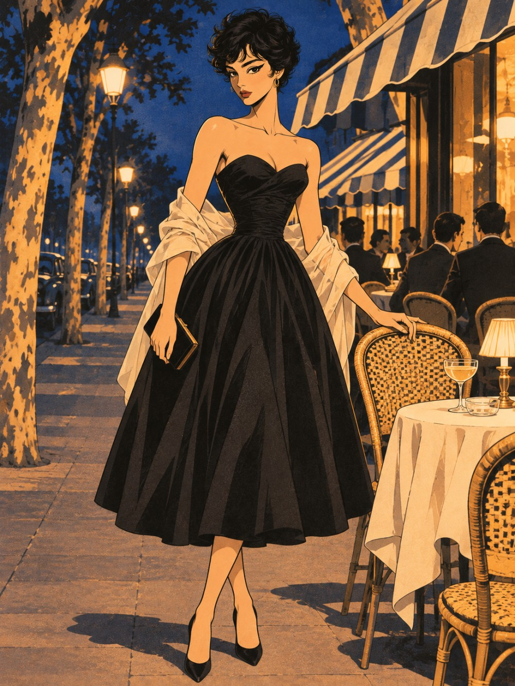
베네토 거리의 밤
플라타너스가 늘어선 비아 베네토는 큰 호텔과 노천카페의 거리다. 치네치타 촬영소에 미국 영화가 몰려오던 1950년대, 배우와 기자들이 밤마다 이 거리의 테이블을 채웠다.
하트 모양으로 판 네크라인, 조인 허리, 종아리까지 퍼지는 검은 치마. 팔꿈치에는 얇은 크림색 숄을 걸쳤다.
- DRESS
- 하트 네크라인의 검은 풀 스커트 칵테일 드레스
- STOLE
- 팔에 걸친 크림 시폰 숄
- BAG · SHOES
- 검은 클러치, 앞코가 뾰족한 검은 펌프스
Agosto
1953
이날 「로마의 휴일」이 개봉했다. 윌리엄 와일러 감독은 세트를 짓지 않고 로마 시내에서 전부 찍었다. 스페인 계단, 진실의 입, 콜로세움이 그대로 무대가 됐다.
의상을 맡은 이디스 헤드는 이 영화로 아카데미 의상상을 받았다. 영화가 끝나면 관객이 기억하는 것은 왕관이 아니라 걷어 올린 소매와 짧은 머리였다.
그 무렵
이탈리아에서는
- 1952로마의 브리오니, 남성복만으로 패션쇼 개최
- 1952.7.22피렌체 피티궁 살라 비앙카에서 이탈리아 패션쇼 개최
- 1953구찌, 발등에 홀스빗을 단 로퍼 발표
- 1953.8.27영화 「로마의 휴일」 개봉
남성 룩 다섯 벌 — 바르베리니 거리에서 아피아 가도까지
한 가닥의 컬
- HAIR
- 볼륨을 살려 뒤로 넘긴 짙은 갈색 머리, 이마로 떨어뜨린 컬 한 가닥
- BROWS
- 다듬지 않은 굵은 눈썹
- SHAVE
- 말끔하게 민 턱
- KNIT
- 깃을 세워 연 크림 니트 폴로
로마식 재단
1945년 비아 바르베리니 79번지에 양복점 브리오니가 문을 열었다. 재단사 나차레노 폰티콜리와 사업가 가에타노 사비니의 가게다. 1952년에는 피티궁 살라 비앙카에서 남성복만으로 패션쇼를 열었다.
로마식 수트는 영국식보다 가볍다. 어깨는 자연스럽게 두고, 재킷은 짧게, 바지는 통을 좁혀 단을 접지 않는다. 광택이 도는 실크 샨퉁 같은 원단과 선명한 색도 이때 남성복에 들어왔다.
- SUIT
- 코발트 실크 샨퉁 투 버튼 수트, 좁은 라펠
- SHIRT · TIE
- 크림 셔츠, 좁은 검은 타이
- 흰 포켓 스퀘어
- SHOES
- 검은 슬립온
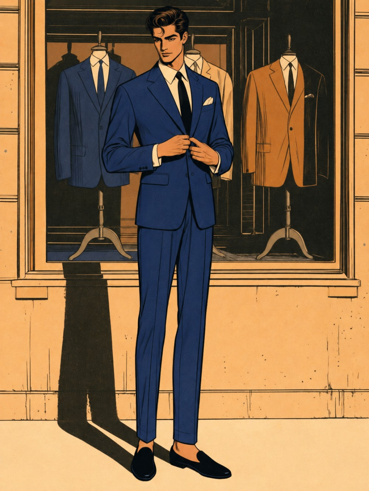
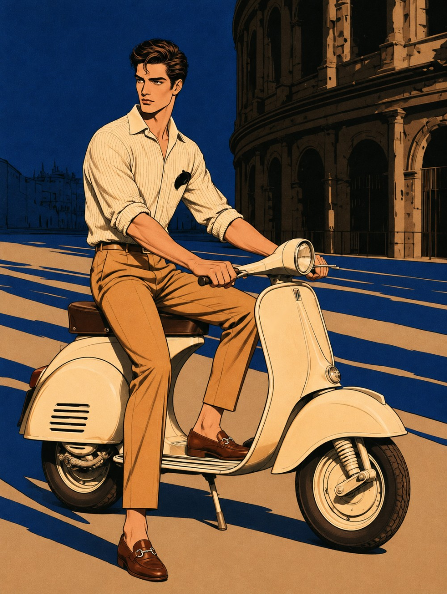
두 바퀴와 로퍼
1946년 피아조가 내놓은 스쿠터는 전후 이탈리아의 발이 됐다. 치마나 양복을 입고도 탈 수 있게 엔진을 덮개 안에 넣었다. 「로마의 휴일」의 두 주인공도 이 스쿠터로 시내를 누빈다.
1953년에는 구찌가 발등에 말 재갈 모양 금속 장식을 단 로퍼를 내놓았다. 끈 없이 신는 미국식 신발을 이탈리아 가죽으로 다시 만든 것이다. 양말 없이 신는다.
- SHIRT
- 소매를 걷어 올린 크림 리넨 셔츠
- TROUSERS
- 통이 좁은 황갈색 면 바지, 갈색 가죽 벨트
- SHOES
- 발등에 금속 홀스빗을 단 갈색 로퍼
천사의 다리를 건너
테베레강을 건너 산탄젤로 성으로 이어지는 다리. 난간의 천사상 열 구는 17세기에 베르니니와 제자들이 세웠다.
여름밤의 예복은 검은 턱시도 대신 크림색 디너 재킷이다. 더운 지방의 휴양지에서 시작된 차림으로, 바지와 보타이는 검정을 그대로 둔다.
- JACKET
- 크림색 싱글 버튼 디너 재킷
- TROUSERS
- 옆선에 새틴 줄이 들어간 검은 드레스 팬츠
- SHIRT · TIE
- 흰 셔츠, 검은 보타이
- SHOES
- 검은 페이턴트 옥스퍼드
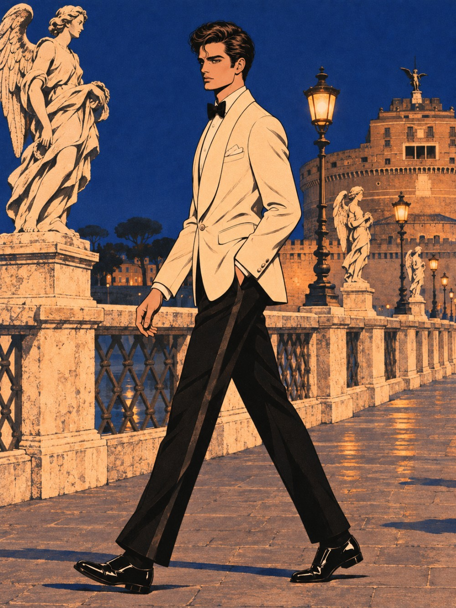
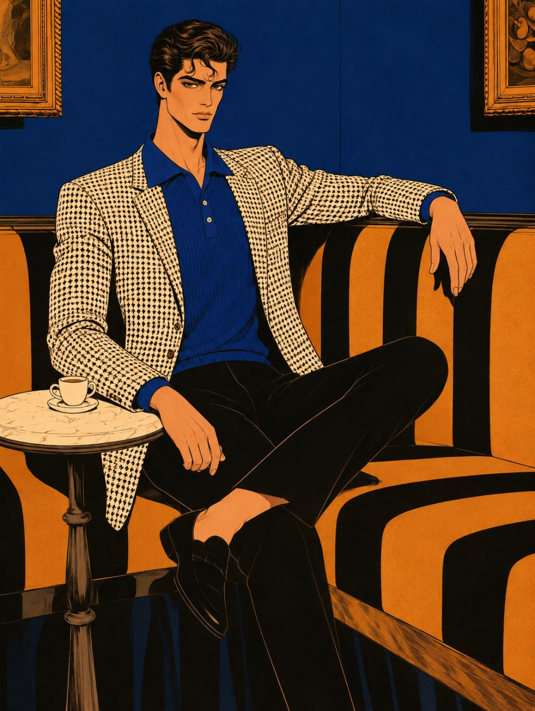
에스프레소 한 잔의 시간
비아 콘도티 86번지의 카페 그레코는 1760년에 문을 열었다. 좁은 방마다 그림이 빽빽하게 걸려 있고, 손님은 작은 대리석 탁자에서 커피를 마신다.
심지를 뺀 부드러운 재킷 안에 셔츠 대신 니트 폴로를 입었다. 넥타이 없이도 갖춰 입은 것처럼 보이는 이탈리아식 방법이다.
- JACKET
- 크림 블랙 하운드투스 체크 스포츠 재킷
- KNIT
- 코발트 니트 폴로
- TROUSERS
- 통이 좁은 검은 바지
- SHOES
- 검은 슬립온
아피아 가도의 저녁
기원전 312년에 닦기 시작한 아피아 가도. 우산소나무와 무덤 유적 사이로 고대의 포석이 그대로 남아 있다.
1950년대 초 이탈리아에서는 먼 길을 빠르고 편하게 달리는 2도어 쿠페, 그란투리스모가 나왔다. 운전석의 옷도 따라 바뀌었다. 허리에서 끝나는 스웨이드 블루종, 얇은 니트, 바닥이 얇은 스웨이드 구두.
- BLOUSON
- 크림 스웨이드 지퍼 블루종
- KNIT
- 검은 크루넥 니트
- TROUSERS
- 회색 플란넬 바지
- GLOVES · SHOES
- 가죽 드라이빙 글러브, 갈색 스웨이드 구두
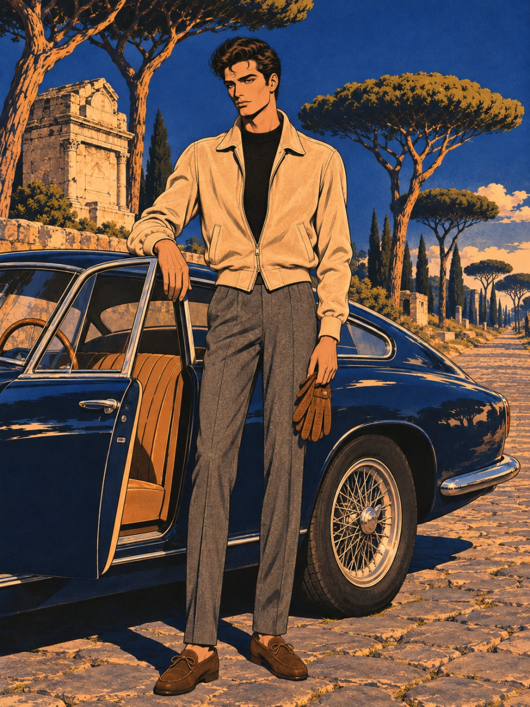
Il Guardaroba
- Issue
- No.04 · Il numero romano
Estate 1953, printed in Seoul 1985 - Locations
- Scalinata di Trinità dei Monti · Via Condotti · Sala Bianca, Palazzo Pitti · Via Veneto · Via Barberini · Colosseo · Ponte Sant’Angelo · Antico Caffè Greco · Via Appia Antica
- Layout
- 두 쪽을 펼친 잡지 지면. 1950년대 이탈리아 디자인 잡지의 절제된 판짜기에서 착안
- Produced by
- Concept, Styling & Art Direction — KIM SOY
Illustrations — AI 생성 이미지
ÉPOQUE의 시간 여행은 다음 호에 계속됩니다.